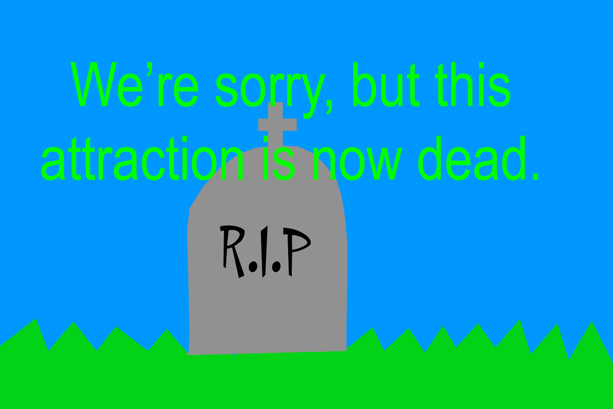
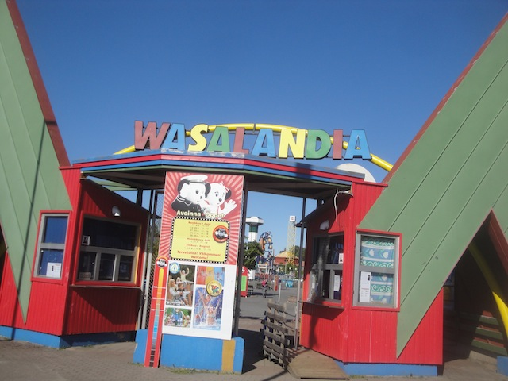
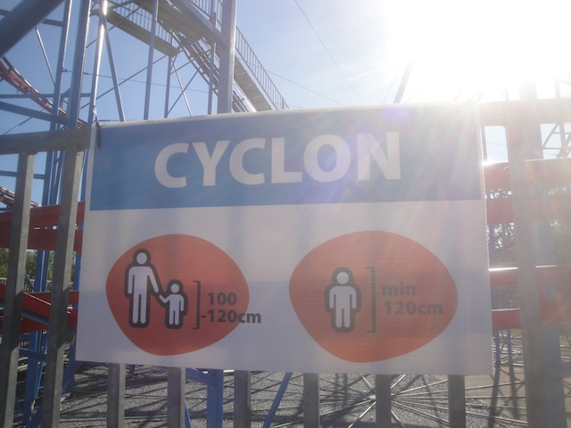
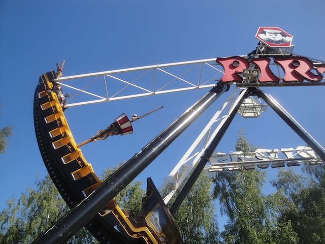
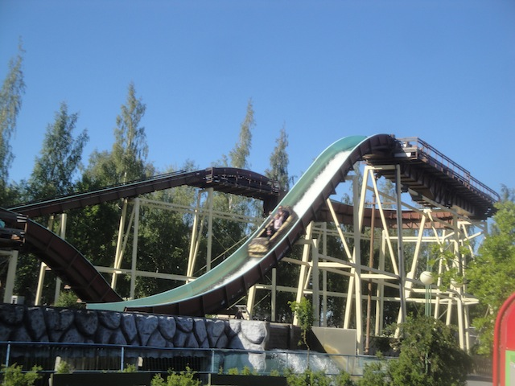
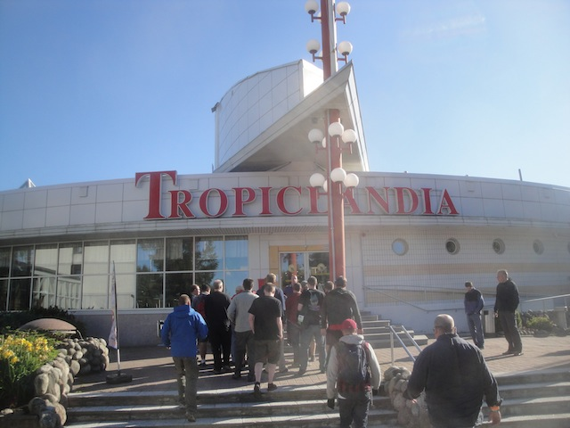
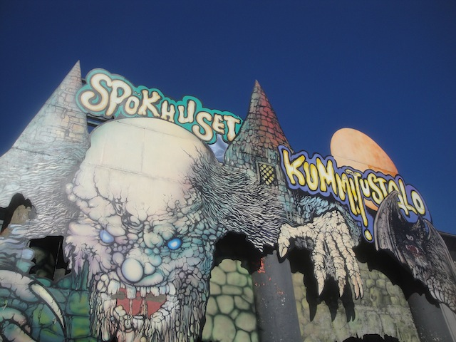
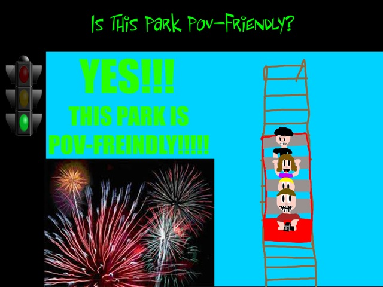

| |

Wasalandia Review

For today's park review, we're going to be reviewing Wasalandia. Now this is pointless for several reasons. First of all, Wasalandia no longer exists. The park has officially closed, and all the rides there have been turned into scrap metal. So it's kind of pointless to review this park, since you can't use this and prepare to visit and take notes for your own visit, since it no longer exists. So it's all pointless. But on top of that, Wasalandia sucked. It was just a tiny little crappy credit whoring stop. At least when it comes to other parks that I've visited and have now since closed, such as Geauga Lake, you can at least tell that the park had a rich history. The park had really good rides. And while the park itself is gone, its best rides still live on at other parks. This was a place that I never even knew about until I visited the park. OK, maybe I read about the park once on a day where I was browsing RCDB, looking at the various random credits at random places and considering if certain places are worth whoring out (I have a really bad habit of wasting time on the internet. I really need to learn how to stop that). So with those two things, why the hell am I even bothering to write a review for a crappy park like this? Well, a couple reasons. First off, I write park reviews for EVERY park I visit. It doesn't matter how bad it is. It doesn't matter if it's a credit whoring stop only meant for really little kids. I still do it. Granted, almost all those reviews are nearly identical and I just copy and paste them together since I pretty much have to say the same thing about all of them for the most part. Seriously, just copy it, paste it, change some names, a little bit of tweaking here, and bingo! I just wrote a park review in under an hour (These things normally take much longer). Second of all, every park deserves to have some sort of critique. They all deserve to have their day in court. And on top of that, the people at Wasalandia really wanted us to check out their park and see it all. Not just whore it out. So we actually have some stuff to say about their other stuff. Granted, it doesn't really mean anything since this park no longer exists. But hey. All parks deserve a review. Even shitty closed ones. Fuck it! Why not! And yes, I'm removing the censors for this review since this technically is a funeral review. Though I still have no idea why I still have censors for swear words. Anyone who reguarly reads the site, or just talks to me in person knows that I fucking swear a lot. Force of habit I guess. Oh well. Let's see what Wasalandia had to offer, and maybe learn why this park closed.
Rollercoasters
There is a link to a review of all the Rollercoasters at Wasalandia.
Top Coasters
Cyclon Review

Flat Rides
Here are some of the reviews of all the flat rides at Wasalandia. Yeah, they had nothing special. But let's check out what they had. First off, they had a pirate ship. Nothing special, but it was a fun ride. Got some airtime. Honestly, I think that was the star flat ride of the park. Yeah, you can see just how big of a park Wasalandia was. They also made sure that we checked out their chairswings. Now these honestly, were pretty shitty chairswings. They weren't the typical kind you see at most parks. They weren't even the Yo-Yo model you see at carnivals and at parks that look like they're stuck in the 1970s. It's kind of flat. But eh. It was fun enough. They also had a ferris wheel where the cars were shaped like cans of Jaffa (European Fanta knock-off). Honestly, I'd rather have some actual Jaffa (or better yet, real European Fanta). I'm pretty sure that was all of their flat rides.

They had a pirate ship.
Water Rides
Amazingly, Wasalandia actually did have a water ride. I know tiny credit whoring parks like this generally don't, but this one did. OK, maybe some do, but it's usually just bumper boats. But nope. Wasalandia has an actual legit log flume. OK. It was a small little log flume, but come on. So many major parks have really crappy and small log flumes. This was a fun little ride. Plus, if you are a fan of TPR, this is the log flume that spawned the now famous jingle, "We are on a Log Flume". And now some of you hate me for bringing that up. Yeah, the water was dirty, but just be happy that a park like this had a log flume.

Who knew a simple log flume would annoy so many people?
Dining
I don't even think that Wasalandia served food. Probably just a few random stands. But actually, I did learn something. Apparently, Wasalandia was in connection with these other nearby stuff, including a water park nearby apparently, and on top of that, a spa, and also, this resteraunt called Tropicalandia. I actually ate there. So I ate at a resteraunt that's apparently connected to Wasalandia. And while Wasalandia no longer exists, the internet is telling me that you can still eat at Tropicalandia. Too bad the food isn't anything special there.

Everything else actually in Wasalandia is gone. But this resteraunt still exists.
Theming and Other Attractions
Here are the reviews of all the other stuff that Wasalandia had. First off, the theming. There was NO theming at Wasalandia. AT ALL!!! It all was plopped on concrete. Nothing magical or special about that. OK. What about other stuff to do. Eh...that's kind of hard. Well, they did have one thing. A Spook House. Man, these year round haunt mazes really are popular in Europe. They're so popular that even these small little credit whoring spots that can't even stay open had them. It was all right. I liked it, but they were putting special effort in it for us since they knew that we were from out of town. Aside from that, I think that was it. Maybe a couple arcades. But it's kind of hard to tell, given that this park doesn't exist anymore. But apparently, the park has connections to other stuff nearby, including this spa. So...that's something.

Warning. The ghost of Wasalandia haunts this now closed Spook House. =P
In Conclusion
Wasalandia may have been a fun little family park in the past, but as I've mentioned, it no longer exists. But from my time at the park, it seemed like a fun little park. Honestly, it kind of felt fun in the same way that your local park is fun. And I don't mean local park as in your home park. No, no, no. What I mean is your local park. An actual park. Playground. Local Park. It had a couple rides, nothing special, but just a little bit to have an hour of fun if you're a local to the area. It's a park that never would've thought that people from outside the area would expect people to visit. Which is why while this is a place that I'd probably just pop in, get the credit, and then leave. But they wanted us to actually explore the whole park. So that's why we checked out their pirate ship, their chairswings, their log flume, and their haunted house. Well, the whole park is gone now. And it's not like anything special got lost. It was all just standard stuff. But hey. I had a fun hour at the park. And I got to talk about this park. So...hey. I can't recommend it. But if you're reading this, I'm not sure what you got from this. This isn't even advertised on the front page or anything. It's buried in the park list. So, I guess Wasalandia just really appeals to you or something. Maybe you're reading all my park reviews since you really like the site, in which case, thank you. The review is almost over. Just have to do the last little bits. Uh...gotta say more stuff. I'm not sure what else to say. Blah blah. I'm bored. La la la. I'm typing at a computer right now. Blah blah blah. Jelly doughnut. Are people actually reading my nonsense!? FUCK YEAH!!! YAY!!!!
Enthusiast FAQs.
*Are there kiddy coaster restrictions? - Wasalandia never had a kiddy coaster at any point when it existed.

Tips
*I have no tips. This park doesn't exist anymore. There is nothing to recommend or suggest.
Theme Park Category:
Small Park
Location
Vaasa, Ostrobothnia, Finland
Last Day Visited
June 26, 2014
Video
There will NEVER be a Wasalandia Video.
Complete Update List
2014
TPR's Scandinavia Trip
Here's a link to the website for the surrounding stuff that is apparently connected to Wasalandia, but still exists.
Home
|